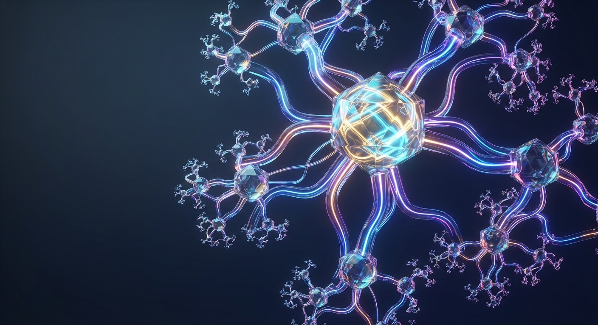
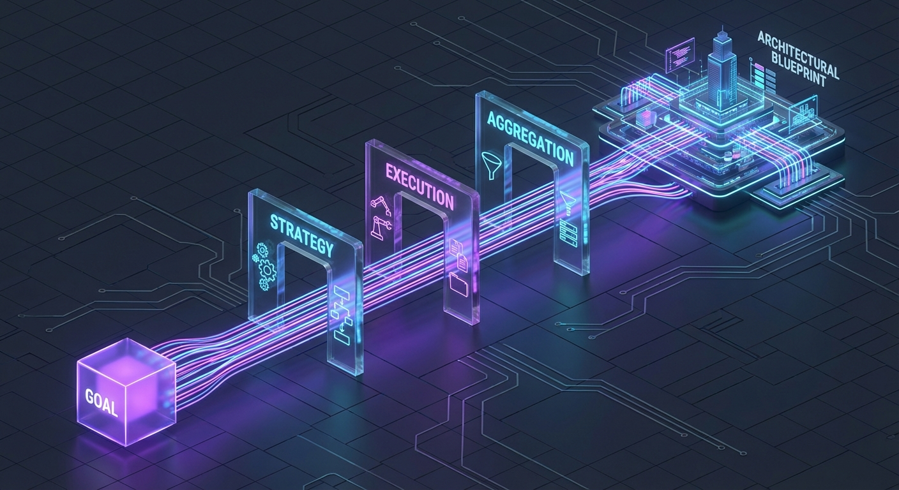
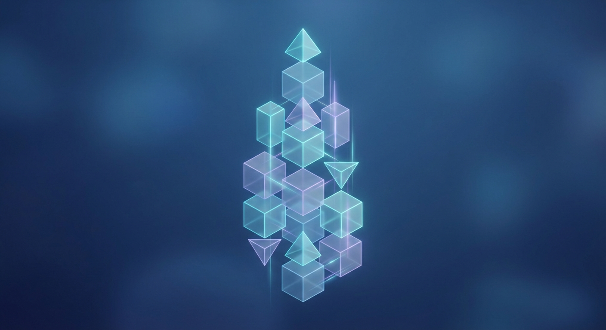

Create and execute complex sub-plans using recursive planning strategies. Dynamically switch cognitive modes, propagate context, and aggregate results to solve multi-stage problems with precision.

Powered by the SubPlanningTask engine.
Supports multiple levels of recursion, allowing complex goals to be broken down into manageable sub-tasks automatically.
Configure specific cognitive strategies (Fast, Detailed, Creative) for different branches of the execution tree.
Seamlessly passes context and dependencies down to sub-plans and aggregates results back up for summarization.

User defines high-level planning_goal and optional context.
System selects CognitiveMode and decomposes the problem.
Sub-tasks are spawned, executed, and monitored for depth limits.
Results are collected and summarized into a final report.
Configure the SubPlanningTaskExecutionConfigData and visualize the output.
Ready to execute. Configure inputs and click Run.

When a topic requires breaking down into historical, technical, and social sub-analyses before synthesis.
Planning a system where sub-components (Database, API, UI) need individual planning strategies.
Generating comprehensive business reports that require aggregating data from multiple distinct domains.